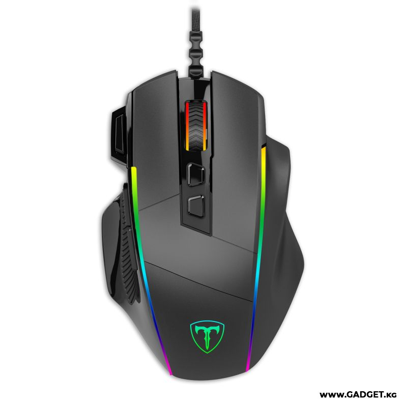
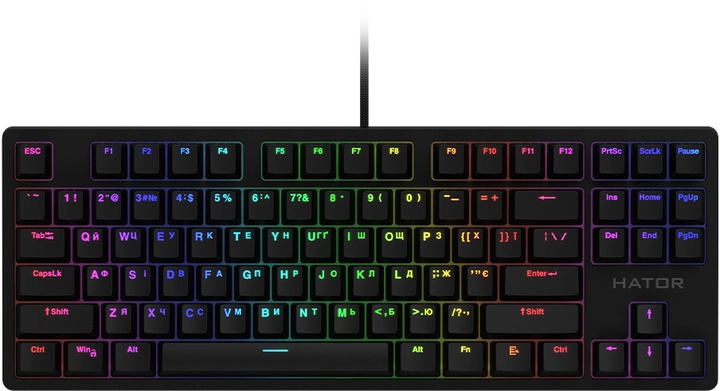
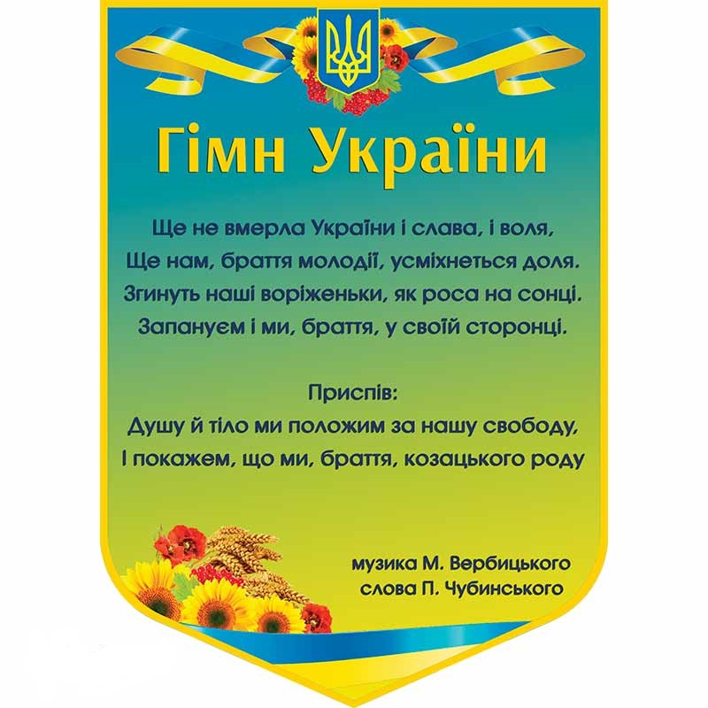

Завдання 1
| Заголовок | |
|---|---|
| Дані, вирівняні по лівому краю комірки | Дані, вирівняні по правому краю комірки |
| 25% ширини таблиці | 75% ширини таблиці |
Завдання 2
| Назва | Модель | Ціна | Фото |
|---|---|---|---|
| Миша T-DAGGER Roadmaster USB Black | T-TGM307 | 546₴ |  |
| Клавіатура провідна HATOR Rockfall EVO TKL Kailh Optical | HTK-630 | 3 299₴ |  |
| Asus Webcam C3 Black | 90YH0340-B2UA00 | 2 549₴ | |
| Навушники Razer Blackshark V2 X Black | RZ04-03240100-R3M1 | 2 799₴ |
Завдання 3
| Україна | ||||
|  | Київ | |||
Завдання 4
| № | Прізвище | Ім'я | По батькові | Рік народження |
|---|---|---|---|---|
| 1 | Мельник | Іван | Данилович | 2004 |
| 2 | Шевченко | Степан | Ігорович | 2005 |
| 3 | Бондаренко | Богдан | Володимирович | 2005 |
| 4 | Коваленко | Віталій | Степанович | 2003 |
| 5 | Кравченко | Данило | Валерійович | 2004 |
| 6 | Олійник | Захар | Артемович | 2004 |
| 7 | Мороз | Ігор | Іванович | 2003 |
| 8 | Петренко | Єгор | Остапович | 2005 |
| 9 | Клименко | Максим | Павлович | 2004 |
| 10 | Харченко | Олег | Тарасавич | 2003 |
Завдання 5
| Характеристики | |||
| Кількість студентів | Якість успішності | ||
| Спеціальність | Ком'ютерна інженерія | 250 | 80% |
| Телекомунікації та радіотехніка | 200 | 75% | |
| Електромеханіка | 150 | 85% | |
Завдання 6
| Спеціальність 123 - Комп'ютерна інженерія | |
|---|---|
Освітньо-професійна програма має прикладну орієнтацію та забезпечує акцент на формування базових фахових компетентностей з інформаційних технологій, комп’ютерних систем та мереж. Теоретичний зміст предметної області ґрунтується на базових поняттях принципів, методів, програмно-технічних засобів та технологій створення, використання та обслуговування комп’ютерних систем та мереж, вбудованих і розподілених обчислень. Основний фокус освітньої програми спрямований на надання загальної вищої освіти в галузі |
інформаційних технологій: технічних (апаратних) засобів та системного програмного забезпечення комп’ютерних систем та мереж. Програма орієнтована на сучасний та перспективний стан розвитку інформаційних технологій та комп’ютерних систем, практичне використання апаратного та програмного забезпечень для вирішення науково-технічних та прикладних задач. Рівень підготовки фахівців забезпечується міжнародною співпрацею в науковій та освітній сферах, наявністю спеціалізованих лабораторій. |
Виконав студент групи 102-ТК
Писаренко Дмитрій